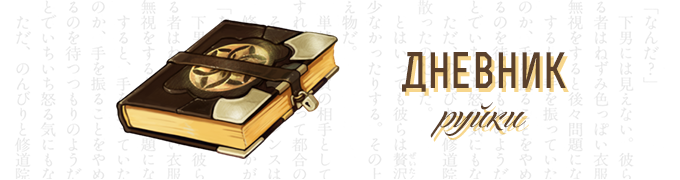

Ниже в хронологическом порядке перечислены последние записи дневника.

-
 1 мар 2015
1 мар 2015Руйка - тян
Дорогой дневник, сегодня я узнала кое-какие вещи, что ввели меня в ступор.
Оказывается, среди ребят есть так называемая группа махо-седзе. И среди них чайная фея, пивная лоли, злобная ведьма-трап, самобот-тян и чифирная ведьма. (ﾟロﾟ) А еще есть трио психов-переводчиков. Почему они так себя называют? Ребята, вы чего там выдумываете, а?
А еще Малф-чан смог поклинить иллюстрации. В армии. С телефона. С ТЕЛЕФОНА!!! (O_O) Как он вообще умудрился?! Я в шоке…
Ну да ладно… Зная ребят, с них-то станется. Кстати, Резе-нян наказан. И сидит теперь без чая. Он все-таки нашел тогда специально спрятанный травяной чай и упер его. Хоть и пришлось за ним побегать, но я его поймала. Вот так вот.
А теперь о самом интересном. Через полтора месяца мы с Элб-саном и Резе-няном едем на фестиваль «Анимия»! Представим там нашу команду. Я вся в предвкушении! (≧◡≦) Там должно быть очень интересно! И я кое-что готовлю к фестивалю, но вам пока не скажу. И мы обязательно расскажем, как все прошло!
И с первым днем весны!
-
15 фев 2015
Руйка - тян
Дорогой дневник, мне до сих пор грустно после вчерашнего дня.
Нет, поначалу все шло хорошо. Я встретилась с ребятами, я подарила им подарки, они – мне. Я очень обрадовалась тому, что они мне подарили. Затем мы просто замечательно повеселились. А потом… потом… Пришел он… Все из-за этого… типа… Я честно собиралась подарить ему шоколад, который сама сделала. Конечно, это смущает, потому я немного замялась. А он… он… вдруг усмехнулся и сказал: «Неужели ты хочешь подарить мне шоколад на День Святого Саунда?». Да еще и заявил, что в моем стиле подарить нечто, вроде «Аленки». Несмотря на то, что у него такой характер, я все же не смогла сдержаться и треснула его дневником, что лежал поблизости (хорошо, что он не порвался).
Этот Валера! Было очень больно и обидно. Я-то надеялась, что все пройдет хорошо. После этого день был безнадежно испорчен.
Даже не знаю, как теперь ко всему этому относиться…
Да еще и Малф-чан снова сильно заболел…
-
 11 фев 2015
11 фев 2015Руйка - тян
Дорогой дневник, давненько я ничего не писала.
Не то чтобы ничего не происходило за это время, просто все более-менее обыденно. Ребята трудятся, не покладая рук, а я им помогаю, чем смогу. Периодически мы собираемся у меня, чтобы весело провести время. Хотя в последние разы Резе-нян как-то подозрительно себя ведет в некоторые моменты. Такое ощущение, будто он пытается найти травяной чай, что я спрятала от них. Резе-нян такой Резе-нян. ┐(￣～￣)┌
Кстати! Не так давно Малф-чан смог установить нормальную связь из армии с нами. Теперь мы можем нормально общаться с ним, а он с нами. И хотя все же плохо, что его нет рядом, разговоры уже радуют. Хотя, едва он появился, ребят унесло куда-то не туда. Мда… (￢_￢) С Малф-чаном не соскучишься.
А еще я немного волнуюсь. Скоро же день Святого Валентина! Подарят ли мне что-нибудь ребята? Очень важный вопрос! Я-то точно им подарю (а стоит ли дарить что-то Валере?), но пока придумала только для Резе-няна и Красса-куна. Они сейчас часто думают о яблочном чае. Но у меня еще есть время подумать! Уж я-то постараюсь!
P.S. А еще я готовлюсь кое к чему, что будет в ближайшее время. Но это пока секретные сведения. (^_-)
-
Начало дневника.